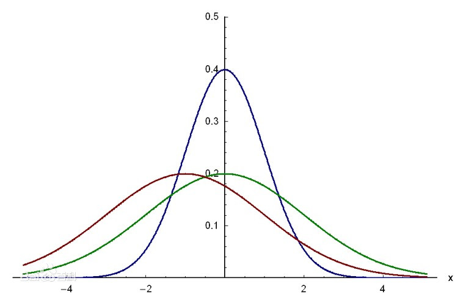

Definition:
For a one-dimensional real random variable X, let its cumulative distribution function be F(x), if there is a measurable function f(x) that satisfies:F(x)=$\int_{−∞}^{+∞}f(t){\rm d}t$,
then X is a continuous random variable and f(x) is its probability density function.

Fig.1.1 - Probability density of normal function
Since the value of the random variable X depends only on the integral of the probability density function,
the value of the probability density function at individual points does not affect the performance of the random variable.
To be more precise, if there are only a limited number of countable infinite points of a function and the probability density function of X,
or the measure is 0 to the entire real axis (which is a zero measurement set), then this function also can be the probability density function of X.
Definition Interpretation:
In mathematics, the probability density function of a continuous random variable (which can be simply referred to as the density function when it is not confusing) is a function that describes the probability of the output value of this random variable near a certain value point.
The probability that the value of the random variable falls within a certain area is the integral of the probability density function in this area.
When the probability density function exists, the cumulative distribution function is the integral of the probability density function.
The probability density function is generally marked in lower case.
Application Scenario:
Probability Density Functions are a statistical measure used to gauge the likely outcome of a discrete value, e.g., the price of a stock or ETF.
- PDFs are plotted on a graph typically resembling a bell curve, with the probability of the outcomes lying below the curve.
- A discrete variable can be measured exactly, while a continuous variable can have infinite values.
PDFs can be used to gauge the potential risk/reward of including a particular security/fund in a portfolio.
- PDFs are used to gauge the risk of a particular security, such as an individual stock or ETF. They are typically depicted on a graph,
with a normal bell curve indicating neutral market risk, and a bell at either end indicating greater or lesser risk/reward. A bell at
the right side of the curve suggests greater reward, but with lesser likelihood, while a bell on the left indicates lower risk and lower reward.
Example:
Suppose a species of bacteria typically lives 4 to 6 hours. What is the probability that a bacterium lives exactly 5 hours?
The answer is 0%.
A lot of bacteria live for approximately 5 hours, but there is no chance that any given bacterium dies at exactly 5.0000000000... hours.
Instead one might ask: What is the probability that the bacterium dies between 5 hours and 5.01 hours? Suppose the answer is 0.02 (i.e., 2%).
Next: What is the probability that the bacterium dies between 5 hours and 5.001 hours? The answer should be about 0.002,
since this time interval is one-tenth as long as the previous. The probability that the bacterium dies between 5 hours and 5.0001 hours should be about 0.0002, and so on.
In these three examples, the ratio (probability of dying during an interval) / (duration of the interval) is approximately constant, and equal to 2 per hour (or 2 hour−1).
For example, there is 0.02 probability of dying in the 0.01-hour interval between 5 and 5.01 hours, and (0.02 probability / 0.01 hours) = 2 hour−1.
This quantity 2 hour−1 is called the probability density for dying at around 5 hours.
Therefore, in response to the question "What is the probability that the bacterium dies at 5 hours?", a literally correct but unhelpful answer is "0", but a better answer can be written as (2 hour−1) dt.
This is the probability that the bacterium dies within a small (infinitesimal) window of time around 5 hours, where dt is the duration of this window.
For example, the probability that it lives longer than 5 hours, but shorter than (5 hours + 1 nanosecond), is (2 hour−1)×(1 nanosecond) ≃ 6×10−13 (using the unit conversion 3.6×1012 nanoseconds = 1 hour).
There is a probability density function f with f(5 hours) = 2 hour−1. The integral of f over any window of time (not only infinitesimal windows but also large windows) is the probability that the bacterium dies in that window.